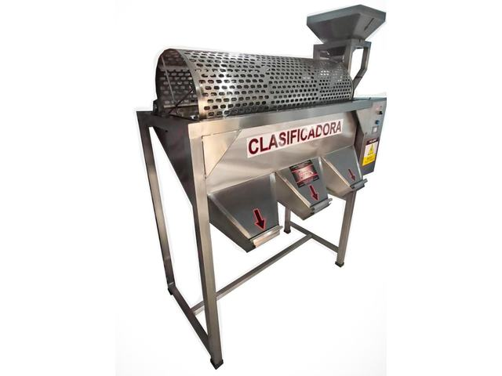
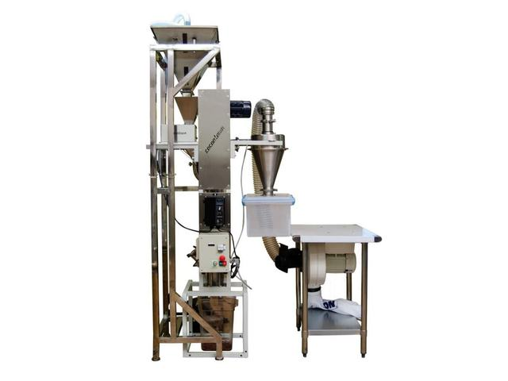
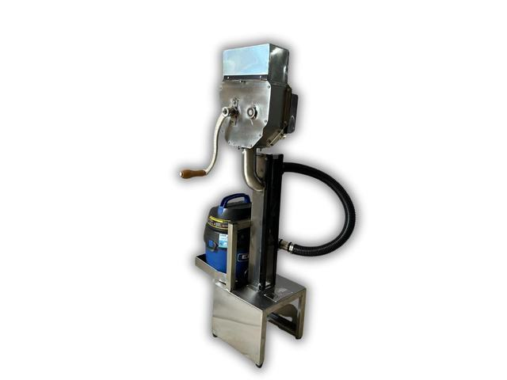
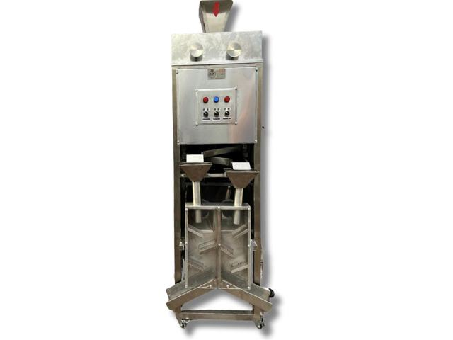
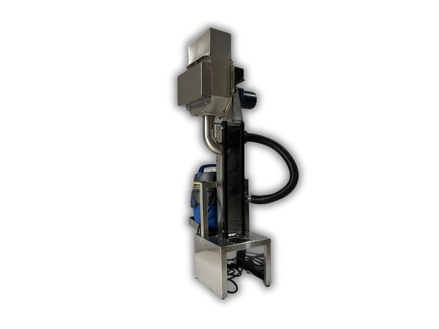
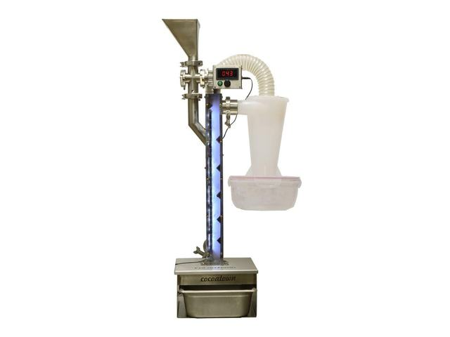
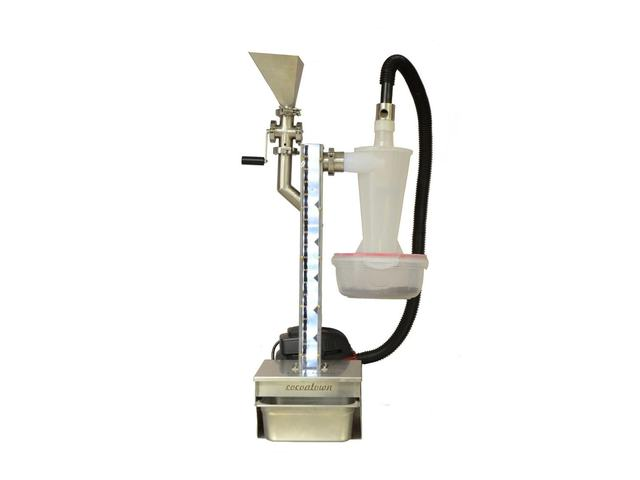
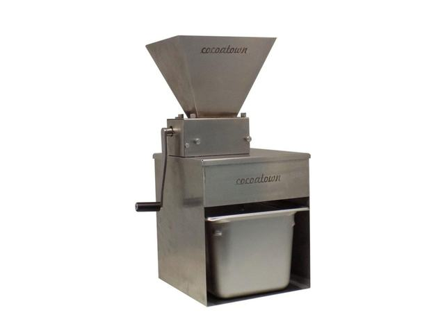
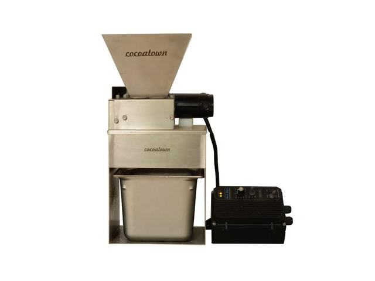

Ver ficha técnicaCAC-CLA-01
Clasificadora de grano premium
Separa el grano por tamaño y densidad para tostar lotes homogéneos: sin clasificar, el mismo tueste deja granos quemados y granos crudos.
Partidores, descascarilladoras y clasificadoras desde 5 hasta 100 kg/h. Quiebre y aventado para obtener nib limpio con la menor pérdida posible.
9 fichas técnicas · haga clic en cualquier equipo para abrir su ficha

Ver ficha técnicaCAC-CLA-01
Separa el grano por tamaño y densidad para tostar lotes homogéneos: sin clasificar, el mismo tueste deja granos quemados y granos crudos.

Ver ficha técnicaCAC-DSC-01
Quiebre y aventado a 100 kg/h. Es la capacidad de planta para producir nib limpio de forma continua.

Ver ficha técnicaCAC-DSC-02
Operación manual para lotes de 8 kg. La entrada de menor inversión al proceso bean to bar.

Ver ficha técnicaCAC-DSC-03
Quiebre y aventado en un solo paso, con regulación de aire para reducir al mínimo la pérdida de nib por la salida de cascarilla.

Ver ficha técnicaCAC-DSC-04
Equipo nacional de 15 kg, sencillo y resistente, dimensionado para obradores y plantas pequeñas.

Ver ficha técnicaCAC-DSC-05
Versión importada con separación por ciclón y mayor rendimiento de nib por lote. 15 kg/h.

Ver ficha técnicaCAC-DSC-06
Quiebre y aventado con ajuste fino según el tamaño del grano, en dos capacidades de taller: 5 o 10 kg/h.

Ver ficha técnicaCAC-PAR-01
Rompe el grano tostado antes del aventado sin pulverizar la cascarilla, que es lo que arruina la separación posterior. 15 kg/h.

Ver ficha técnicaCAC-PAR-02
Partidor motorizado de 30 kg/h, para alimentar de forma continua la descascarilladora sin cuello de botella.
La línea de cacao reúne 53 equipos en 9 categorías.
Envíenos su requerimiento o las especificaciones del pliego. Respondemos con ficha técnica, alcance de instalación y plan de mantenimiento.